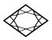
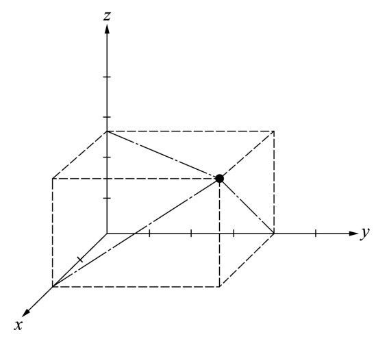
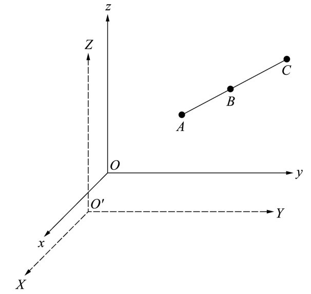
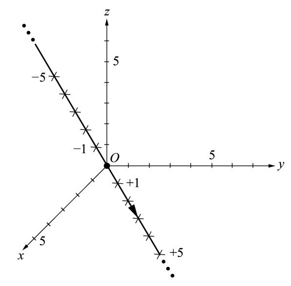

第二章关于爱因斯坦思想（空间和时间的相对性）的任何讨论，都应该从牛顿观念的清晰图景开始。因此，在让牛顿和爱因斯坦有机会亲自陈述他们的见解之前，我们应该做一番回顾。
牛顿在他的《原理》中引进的第一个概念乃是刚体或者质点（particle）的概念。他用密度和体积的乘积来解释它的质量。只要密度还没有定义好，这样定义质量就显得同义反复了；它被很多吹毛求疵的人当作伪定义而抛弃了。这种责难并非没有道理，但它未能认识到牛顿有关物质结构的思想是始于原子（atom）的概念。
在牛顿的见解里，物质是由非常小的粒子或者原子组成的。物质的密度不过是对单位体积中物质粒子的数目的一种度量。这个概念实质上在19世纪就被原子论（atomic theory）的发展证实了。
牛顿显然花了很长时间来考虑应该如何定义质量。今天类似的思考看来仍然很有道理：尽管在过去的3个多世纪里我们已经增长了许多见识，包括量子力学和粒子物理学，但质量和物质究竟意味着什么仍不清楚。
牛顿第一个认识到物体的质量和速度之积的重要性，我们称这个乘积为物体的动量。在物体不受外力的情况下，这个量不会改变，即始终为一个常量。因为在这种情况下，物体的质量通常没有改变，它的速度也没有改变。牛顿在他的《原理》中阐述道，所有刚体在不受外力作用时都保持静止或者匀速直线运动的状态。在我们生活的时代，我们见到的运动速度相对比较快，那种阐述看来十分好理解。而在牛顿生活的时代却并非如此。很长时期以来人们相信的是，所有运动都直接与力相关。
像我们目睹的一样，我们周围的世界呈现出它的多面性。我们看到了诸如秋天树叶凋零和城市上空鸟儿飞翔等大量形形色色的事情。所有这些现象都有着一个共同点：它们都是由许多不同的过程同时起作用所导致的。树叶从树上飘落是因为微风拂动它们。它们之所以缓慢飘落而不像苹果那样从枝杈上快速掉下，是因为空气阻碍了它们的运动。在苹果下落时虽然也存在空气阻力，但对其影响较小。
我们在自然界所观察到的这些不同运动过程的原因是什么呢？运动本身是什么呢？我们会直觉地认为运动起源于某种力。举个小轿车的例子，让它初始时静止。为了让它运动，我们就必须施加力，比如说从后面推它。要让它保持运动，我们就得一直推下去，或者是启动发动机来代替我们的工作。我们有这样一种印象，即运动是一种不断需要力的作用或者能量的状态。这个原理是在2000年前由亚里士多德（Aristotle）提出的，当时他说，每一个运动着的物体，当使之运动的力停止作用后，它就会静止。
亚里士多德的原理当然是有道理的，我们经常看到运动停止的情形。不过，他的原理有一个重大的缺陷——它很难适用于他所赋予它的这种普遍形式。当然，亚里士多德考虑的是地球上物体的运动，每一个物体与其周围的事物均保持恒定的联系。他的原理完全不能涉及太空中天体的运动。一艘远离恒星或者行星运动的宇宙飞船，不需要力来维持它的运动。它将永不停歇，持续无限期地运动。
伽利略是第一个指出亚里士多德的原理需要被取代的人。伽利略通过许多实验手段发现，一个物体在不受外力作用的情况下便沿直线匀速地保持它的运动。
正如我们所知，速度绝不是对所施加的力的一种量度。若是这样的话，一辆以100千米每小时在快车道上直线行驶的小轿车，关掉发动机后，如果没有外力作用，它就应该保持这种运动状态。实际上，这样的事不会发生。由于车轮与路面的摩擦力和空气阻力所导致的能量的持续损失，小轿车在几分钟后就会停下来。从这个意义上讲，小轿车遵循亚里士多德的原理。因此我们不能说，亚里士多德的原理与伽利略的原理相矛盾，并且事实上是错的。倒不如说，亚里士多德所表述的原理不够清楚，因而它在很多应用上，尤其在技术应用上，是无效的。
伽利略的原理在牛顿的《原理》中扮演了一个重要角色。牛顿在他关于刚体运动的一些定律中把它提高到首要地位，他把刚体趋向于保持匀速运动的原理称为惯性原理。
牛顿对空间和时间概念的定义对于他赋予自己的阐述力学的基本定律这一使命具有核心意义。所有事物都在空间和时间里运动。然而，空间是 什么？时间又是 什么？空间无限大吗？还是它有边界？时间缘何恒定地流逝？时间究竟是 什么？
圣奥古斯丁（Saint Augustine）回答过这个问题：“我知道时间是什么。不过，若有人问我，我却不能告诉他们。”托马斯·曼（Thomas Mann）在《魔山》（The Magic Mountain ）里问道：
时间是什么？时间是一个谜——虽属虚构却仍是万能的。它是世界的一种状态，如同它所显现的那样；它是与空间中物质的存在及其运动结合在一起的运动。假如不存在运动就不存在时间吗？若不存在时间就没有运动吗？这正是要问的。时间是空间的函数吗？或者空间是时间的函数吗？或者它们是等同的？可以一直这样问下去。时间能起作用，时间可以表达，时间会“记录”。它记录什么呢？它“记录”变化。现在不是过去，此时不是彼时，因为这二者之间存在运动。但是，我们用来测量时间的运动是周而复始、自我封闭的，并且因此不妨说它是静止或者停止这样的运动和变化。由于过去永恒地在现在中重复着自己，彼时就在此时。
要想确定被我们称为“时间”的各种现象的本质的确困难，直到今天物理学家们尚未完全成功。而对于物理学家而言，要想说明怎样测量时间——当然是用时钟——却容易得多。客观存在的基本事实是，大自然为我们提供了一些周期运动，即保持自身重复地做的运动，比如单摆的来回摆动或者石英水晶的振荡。要想制作一个时钟，我们只需要一种能对这些运动计数的仪器。周期的数目就是对过去了多长时间的一种度量。
牛顿显然颇为艰难地力图建立尽可能准确的空间和时间的概念。按照他的想法，空间和时间各自独立存在而且都与物质无关。他将相对空间和相对时间（作为一方面）与绝对空间和绝对时间（作为另一方面）严格区分开来。
绝对的、真实的和数学的时间，自然而然地根据它自己的本性在稳定地流逝，与任何外部事物毫无关系。时间用另外的名称被叫做期间（duration）；相对的、表观的和普遍的时间，是通过运动对期间进行的某种可察觉的和外显的（不管是准确的还是非稳定的）度量，它通常被用来取代真实的时间，比如1小时、1天、1个月、1年。
绝对空间，依其自身的本性，与任何外部事物毫无关系，总是保持相似和静止。相对空间是绝对空间的某种可移动的量纲或度量；我们的感觉通过其相对身体的位置来确定相对空间；它通常被认为是静止的空间。 4
有趣的是，牛顿感到有必要给相对空间和绝对空间制定一个明确的区别。我们都知道他的相对空间的含义。那是我们周围的空间，我们在其中运动。它给予我们3个不同的运动方向：上下、前后和左右。换言之，我们的空间有3维。空间的每个位置由3个彼此无关的数字即3个坐标来表征。它们是我们能任意建立的坐标系的一部分。最常用的坐标系是用彼此成直角的3个坐标轴定义的（见图2.1）。

图2.1 带有3个坐标轴x 、y 和z 的笛卡儿坐标系（Cartesian coordinate system）。空间里任一点的位置都能由3个数即该点的坐标来唯一地确定，坐标是通过该点在3个坐标轴上的投影而得到的。虚线表示这些投影，它们总是与所讨论的坐标轴成直角。
空间某点的坐标当然没有绝对的意义。它们不仅取决于它的实际位置，而且取决于坐标系的原点和空间里坐标轴方向的任意选择。真正重要的是某点的坐标相对其他点的坐标的关系。
如图2.2所示，A 、B 和C 三点排在一条直线上，B 是A 和C 之间的中点。B 点表示从A 到C 的路径的中点这个性质是重要的，它与选择的坐标系无关。

图2.2 在三维笛卡儿坐标系里表示的3个点A 、B 和C 。由于空间的均匀性，这3个点在原始坐标系（实线）和变换坐标系（虚线）里的定义是完全等价的。
让我们现在考虑这些点的坐标。A 点与B 点的坐标之差等于B 点与C 点的坐标之差。例如，设C 点和A 点的y 坐标分别为7和3，则B 点的y 坐标为5——正好在3和7的正中央。这对x 坐标和z 坐标同样成立。
图2.2也显示了当我们移动坐标系的原点时会是什么情形，为简单起见，我们让新坐标轴与原来的平行。A 、B 和C 三点并没有改变它们的位置，但在新坐标系里它们的表示与在原坐标系里的表示不同。它们的y 坐标不再是3、5和7，它们也许移至比如说4、6和8。再一次地，B 点的坐标仍精确地处于A 和C 的坐标的中点。
B 点精确地处于A 和C 的中点的这种性质与坐标系无关，这就是所谓关于坐标系变换的不变性。类似地，我们把这3个点放在空间何处，无论是靠近原点还是离开原点，都不重要。空间中的任何点或者区域都没有任何特权，都有着同样的权重（weight）。空间的这种平权的性质被称做空间的均匀性（homogeneity）。依照牛顿的看法，我们的空间乃是均匀的和无限的。
空间的另一个特征在如下这个方面是重要的：我们不仅能够将我们的坐标系的原点向任意方向移动，我们还能转动这个坐标系。坐标轴的方向都不是固定的，因为空间不存在特殊的方向。每个方向都等价于其他任何方向，空间被称为是各向同性的。
空间的均匀性和各向同性（isotropy）允许几何系统或者物理系统（比如一个三角形或者一个实心球）都能由无穷多个坐标系来描述，所有描述都完全等价。
由于空间的均匀性和各向同性，我们能够在空间中改变任何物体的位置而物体本身不发生变化。只要没有外部影响干扰空间的均匀性或者各向同性，这点就是正确的。严格地说，这个条件仅适用于远离行星和太阳的引力场干扰的外层空间。我们日常生活的这个空间不是各向同性的。存在着一个与所有其他方向有区别的方向，它沿引力方向指向地面。
到此为止，我们只考虑了空间。然而，自然界的所有过程都发生在空间和时间里。让我们看一看自然界中最简单的、可以想象得到的一种动力学过程，即穿过空间的物体（例如宇宙飞船）的自由运动。为了简单起见，我们将忽略宇宙飞船的尺度并将它看作一个类点物体（pointlike object）。这个点有质量，即宇宙飞船的质量。为了说明，我们可以将这个理想化了的物体（实际上并不存在）称为“质点”。
让我们考虑这个“质点”在空间的自由运动。按照牛顿的惯性原理，这个物体要么沿直线做匀速运动，要么静止。在后一种情况下，它的位置很容易在坐标系里描述。该宇宙飞船在所有时刻都位于一个固定点，这就是它的位置。我们能够这样移动坐标系，使它的原点与宇宙飞船的位置完全重合。于是解释起来就非常容易：宇宙飞船的坐标在所有时刻都是零。
而当宇宙飞船在空间运动时，描述起来就困难得多了。我们能在任一时刻表示出它的坐标，但这些坐标从某一刻到下一刻是变动的。它们都依赖于时间。看一看宇宙飞船飞越空间时所采用的所有坐标，我们会看到一条直线。在时间上的任意一点，宇宙飞船都处于这条直线上的某个特定位置。这条直线可以朝向任何方向，原点可以距这条直线任意远的距离。由于空间是均匀的，我们可以选择让原点位于宇宙飞船运动所沿着的直线上。
固定了宇宙飞船的直线径迹并没有明确地确定了它运动的动力学结果。宇宙飞船可以沿这条直线快速运动，或者慢速运动。为了确定这种运动，我们必须确定的不仅是宇宙飞船位于何处 ，而且还要确定它何时 在那里。我们通过设定相应于宇宙飞船航线的直线路径上的每一点处的时间，就能容易地做到这点。
图2.3表示的是某个具体运动的时间，单位是秒。借助所列出的时间，我们可以确定宇宙飞船的速度。时间原点之所以这样选择，为的是使宇宙飞船经过原点时，它的时间位于零点。

图2.3 质点在三维空间中的直线运动。在图中所示的情况里，这条直线经过坐标系的原点。径迹上的数字以秒为单位表示出了质点行经这个位置的时间。坐标轴的单位可以是千米、英里或者任何其他距离量度。这样选择坐标系，使得我们可以任意地让质点在时间零点上经过原点。
读者可能已经注意到了，我们不仅任意选择了空间坐标的原点，还任意选择了时间的原点。在描述像宇宙飞船这样的简单运动时，这种任意性是我们所拥有的另一种自由。
正如牛顿在他的《原理》中所强调的那样，不仅空间具有均匀的结构，时间的流逝也有同样的均匀结构。对宇宙飞船的运动，我们选择的坐标系的原点与所讨论的问题是不相关的；不论我们以秒或任何其他单位测量，我们选择时间标度上哪一时刻为零点都没有关系。只要没有任何东西能区别时间上的一个特定点，即所有时间点都是等价的，那么运动的观察者任意确定时间零点就有意义。
我们描述的宇宙飞船在空间中的运动的确就是这种情况。无论宇宙飞船是这一天或那一天、这一年或那一年沿着它的轨道运动，只要它的速度相同，而且是沿着相同的直线运动，那它的运动就是相同的。
现在变得很清楚，空间和时间有某些东西是相同的。至少，这两者都是均匀的。时间均匀地流逝；时间上的任一点与其他点都没有根本差别。类似地，我们选择空间哪一点为零点也不重要。当然，空间与时间之间存在着相当大的差别。在空间中，我们可以随心所欲地从一个地方运动到另一个地方。在时间中我们却不能，因为它滴答流逝，不受我们控制。时间只向一个方向奔跑，奔向未来；只有在幻想中才能返回到过去。
空间有3个方向而时间只有1个。时间由钟表的滴答来表示；用秒、分钟等来度量。空间用米、千米或英里来度量。秒和米是完全不同的单位，它们没有任何直接的关系。
牛顿在谈及不依赖于观察者而流逝的绝对时间时指出了空间与时间的差别。没有任何东西、任何外部环境能影响时间的消逝。没有什么东西比时钟的恒定滴答更不可动摇了。
牛顿的绝对时间概念有直接的意义。它与我们的日常体验一致，虽然我们的心理感受会对相同的时间跨度赋予不同的权重。等1小时飞机比读1小时惊险小说似乎要长得多。
对读者来说，绝对空间的概念不那么明显。牛顿这个词是什么意思呢？他在《原理》中写道：“绝对空间，由于其本质，无须参考外部物体而保持均等和静止。”这种主张是令人吃惊的：在表述他的惯性原理时，牛顿已经清楚地认识到，一个物体处于静止或者以特定速度沿一条直线做匀速运动二者没有任何差别。可是牛顿怎么会说到不运动的绝对空间呢？
说了这么多，当我谈及空间坐标系时，我指的是相对于观察者处于静止的一个系统，观察者是出于他或她的个人目的而定义这个系统。我现在应该介绍一种相对于观察者在运动的系统。
比如，我们看一看在空间偶然相遇的两艘宇宙飞船。它们都沿直线匀速地运动。在每一艘宇宙飞船内都有一个观察者，他定义了一个与他一起运动的坐标系。让我们称这两个系统为A 和B 。现在想象我们登上A 系统的宇宙飞船。我们认为它处于静止状态。
另一艘宇宙飞船，比如说以100米每秒的速度经过。静止的系统A 与运动的系统B ，哪一个更好一些呢？
牛顿的惯性原理给出了答案：两者同样好。因为绝对运动不能被证实，系统B 的宇宙飞船中的观察者也会确定他所在的系统是处于静止的那个。相对于这个观察者所在的系统B ，系统A 在运动，其运动速度与系统B 的宇宙飞船在系统A 中的运动速度恰好相等。这就是我们前面假设的100米每秒。只是速度的方向恰好相反。
在地球上我们也知道类似的情况。比如，让两列火车彼此经过，或者让一列火车经过另一列在车站中静止的火车。有些读者会记得向静止的火车的窗外看时的情形，得到的印象是他们的火车确实是在运动，而经过的火车似乎还停在那里。
在地球上也不可能定义绝对运动。只有相对运动，即参考某个特定坐标系的运动可以被定义。
让我们考虑一列以100千米每小时的速度运动的火车。乘客A 坐在火车前部的车厢，乘客B 坐在后面的车厢。两个人都在读报；两个人相对于火车都处于静止。然而，对站在车站相对于地面不动的观察者来说，A 和B 两个乘客都在以100千米每小时的速度运动。
中午，内部通讯系统广播说，火车中部的餐车开业了。我们这两名乘客都起身走向餐车。每个人都以4千米每小时的速度向火车中部走去。对火车上的另一名乘客而言，A 和B 都以相同的速度即4千米每小时运动，只是沿相反的方向，A 朝与火车运动相反的方向，B 朝与火车运动相同的方向。
车站上的旁观者看到的则完全不同。B 在以104千米每小时的速度猛冲，即以火车运动速度与B 的步行速度之和在运动。而乘客A 只以96千米每小时的速度经过车站中的观察者，即从火车速度中减去步行速度。
在地球上，静止的坐标系容易定义。当我们说一个物体处于静止状态，我们指的是相对于地球表面它是静止的，即相对于我们脚下的地板或是我们所站之处旁边的一棵树，它不运动。
但是，甚至连这也是一种相对的叙述。坐在运动的火车上读报的乘客看他旁边的人好像是静止的，而穿过火车行走的列车员看来是在运动。描述显然取决于参考系。比如，乘客和列车员相对于地面或任何其他系统都在运动，只有在与火车一起运动的坐标系中例外。
由在空间中自由运动的宇宙飞船上的观察者定义的坐标系称为惯性系。在惯性系中，物体的自由运动可以很容易地描述。根据牛顿惯性定律，如果不是处于静止，物体就会沿直线匀速运动。如果处于静止，它将一直这样保持下去。
与科学中许多其他概念一样，惯性系的概念代表的是理想化的、极端的情况。实际上不存在不依赖且不受其他物体影响的、自由运动着穿过宇宙的宇宙飞船这样的东西，这是因为，即使它远离行星、恒星和星系运动，它仍会受到遥远天体的引力影响。
我们只能近似地获取一个惯性系。比如，一个以太阳为原点、能描述行星运动的坐标系就是惯性系的很好近似。确实，太阳本身也并非不受外部影响；我们的银河系中其他恒星的万有引力迫使它绕银河系中心在几乎是圆形的轨道上运动。它的轨道的曲率小得几乎在大多数问题上都可以忽略；我们能够不妨事地把这种轨道看成是一条直线。我们可以稍有保留地把这个以太阳为原点的系统看作惯性系。
当我们考虑与地球表面有关的坐标系时，事情就更不明显了。我们的行星绕太阳运动是由于太阳的万有引力的作用。地球还绕自己的轴每24小时转一周。因此，当从太阳系之外看时，一个固定在地球表面的坐标系描述了一种相当复杂的运动方式。它并不像一个惯性系那样匀速地运动。
严格地讲，地球上没有惯性系。然而，在很多应用中，我们可以忽视陆地系统的异常行为，比如就像在汽车行驶的动力学中一样。汽车与地面上所有物体一起绕着太阳并绕着地球自身的轴运动这个事实并不重要。如果它匀速沿高速公路上的一条直线运动，在大多数场合中，我们可以将由汽车定义的那个坐标系看作惯性系。
在地球上，我们习惯运用相对于地面处于静止的系统。与相对于处于静止的系统做匀速直线运动的所有其他系统一样，这也近似于一个惯性系。后者是我们定义我们的速度所参考的系统。高速公路上，在100千米每小时的区域里因速度达到130千米每小时而受罚的司机，并不能因为申辩只有明确地定义了参考系时速限制才有意义而逃避罚款。
可是，只有当明确指出适当的参考系时，具体指定速度才有意义。速度必然与给定的系统有关。因此，我们无法直接感觉到我们运动的速度。闭上眼睛坐在汽车里，我们无法区别100千米每小时和150千米每小时的速度。
然而，并不是所有与速度有关的物理量都是相对的。比如，人马上就能感觉到加速。闭着眼睛坐在汽车里，当汽车改变速度即当它加速或减速时，我们立刻就能感觉到。当汽车加速时，我们被推回到我们的座位；作为加速作用的结果，我们开始意识到力。这个力出现是因为每个物体都想保持它的运动状态不变。如果这么做受到阻碍，就会出现一种所谓惯性力来阻止加速。
如果我们现在取一辆运动着的并在加速的汽车做我们的参考系，我们会注意到，原来静止的物体，比如搁置在汽车仪表板上的铅笔，便不会呆在原处，它们将向后滑动。
惯性力的出现清楚地表明，我们处理的并不是一个惯性系 。在加速参考系中，物体一般不会沿直线运动；它往往会沿着相当复杂的曲线运动。
来源于加速作用的惯性力可以被测量，因此表示它不取决于参考系。物体的加速度有绝对的含义，与物体的速度不同，后者是相对的并且因此依赖于参考系。
现在让我们回到牛顿绝对空间的思想。我们刚才已经看到，对每个惯性系而言，存在无穷多种相对于第一个系统做匀速直线运动的其他惯性系。这些系统中的哪一个可以说是从牛顿的意义上描述了绝对空间呢？像牛顿那样，谈及不依赖于物质而且不受其影响的绝对空间有任何意义吗？存在没有物质的空间吗？或者倒不如说物质是空间存在的原因，不是吗？因为空间通过其中的物质及通过物体置于其间的诸多方式显现出来。
对牛顿来说，绝对空间的思想有种几乎是神秘的、甚至是宗教的含义；对他而言，它代表一种可以与上帝相比的完全令人满足的精神。我们会认为诸如绝对空间等性质只有上帝才拥有。绝对空间是永恒的、无限的、静止的。它既不能被毁坏也不能被创造。它是无所不在、无所不包的。牛顿认为宇宙的创造者是位几何专家。
当然，牛顿明白他引入绝对空间思想时所面临的困难。它的存在意味着，在无限多种惯性系之中，存在着一个有特殊含义的系统，即相对于绝对空间保持静止的系统。但是，正如牛顿所坦率承认的，这个性质是不能用实验来测量的。
放弃绝对空间的概念，或者，作为一种折中，把所有惯性系的总和看作绝对空间，这样就可以避免这些困难。如果有谁想要知道这些系统中的一个，那么他仅仅通过考虑所有可能的匀速直线运动就可以构建所有其他系统。显然，牛顿不想允许这种折中，因为他坚持他的绝对空间的观点。我们不知道他为什么要这么做，但是促使他这么做的原因可能是在科学舞台之外。
哈勒尔坐在三一学院庭院的喷泉边沉思。“牛顿这么固执地坚持绝对空间的思想是多么奇怪，”他想，“显然，在假设绝对空间时他放弃了他的座右铭‘假说不等于事实’（我不构造假说）。毕竟，引入绝对空间的思想并由此引入绝对给定的坐标系——因此引入享有特权的惯性系——而不告诉我们如何从实验上确定那个系统：那么，那就是相当大胆的假说！”
在那个时刻，哈勒尔很遗憾不能直接请教牛顿。他离牛顿工作的地方只有几步之遥，可是，他当然不可能随便地走进他的房间去询问他。哈勒尔只好接受这个现实，过了一会儿，他就离开了这个四方院。这是一个美丽的夏日早晨，就英国的气候而言格外温暖。步行穿过慢慢苏醒的剑桥城让人疲倦，于是哈勒尔坐在学院后面公园里照料得很好的草坪上休息。不久，他就睡着了。
不过，睡眠并未赶走在三一学院时留给他的那些新印象，而是恰恰与此相反。在哈勒尔的睡梦中，牛顿扮演了一个特殊的角色。几天后哈勒尔教授在圣巴巴拉的会议上见到我的时候，在去位于太平洋海岸的埃尔卡皮坦州立公园的旅途中，他把一切都告诉了我。接下来，我试图按照他所描述的梦境进行转述，在其中哈勒尔本人既是讲述者也是参与者。